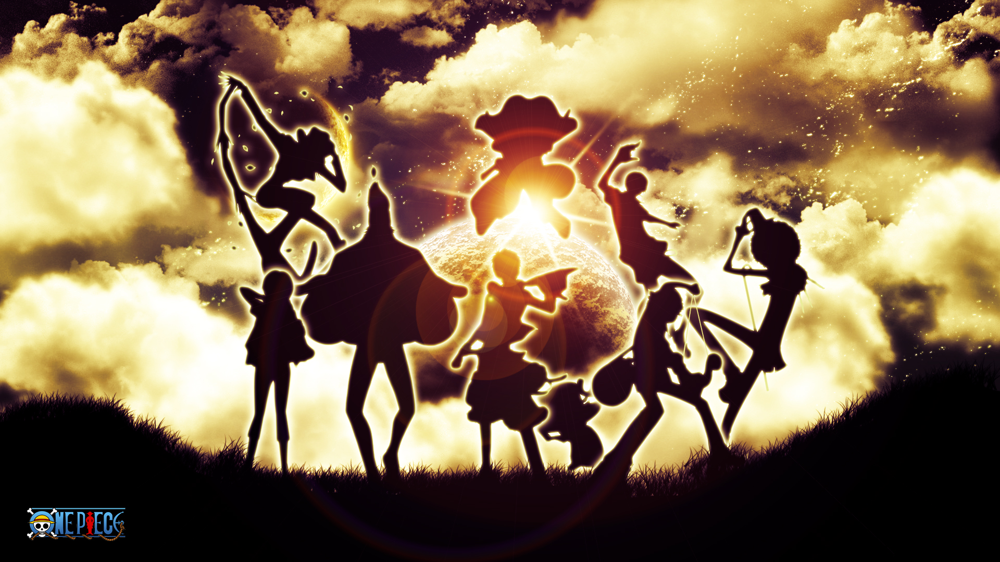
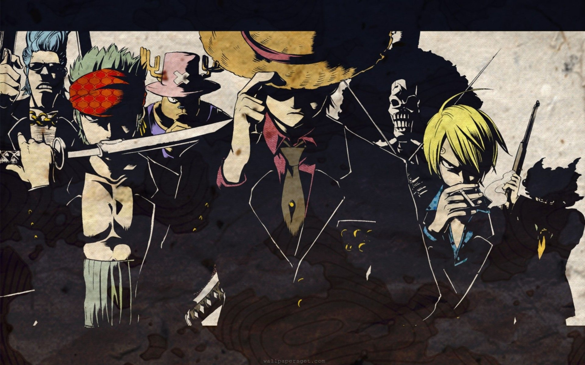
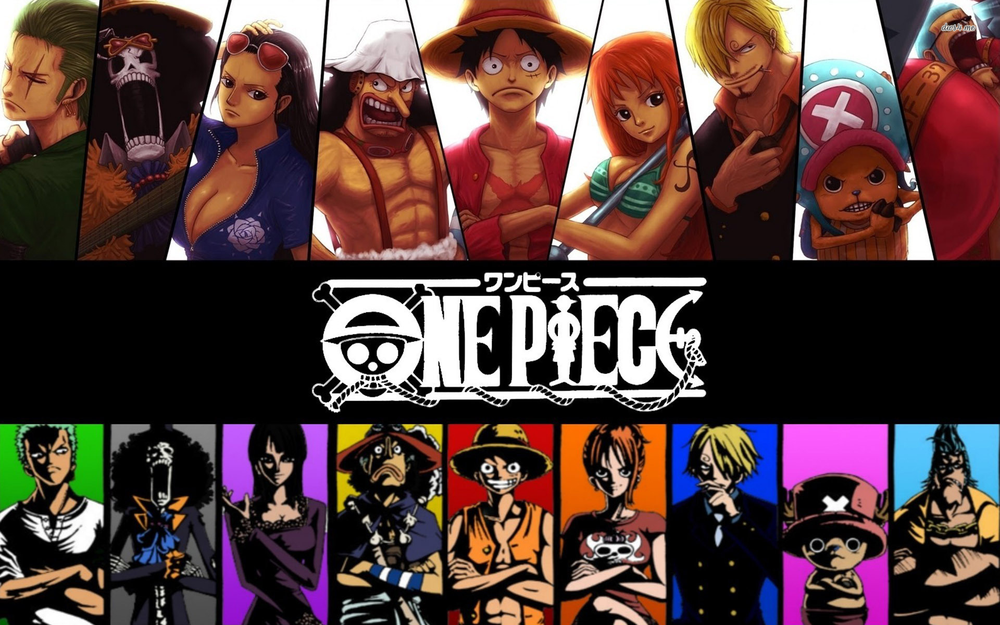

| Home | Gallery | Contact | About Us |
One Piece is a Japanese manga series written and illustrated by Eiichiro Oda. It has been serialized in Weekly Shonen Jump since July 19, 1997; the individual chapters are being published in tankobon volumes by Shueisha, with the first released on December 24, 1997, and the 74th volume released as of June 2014. One Piece follows the adventures of Monkey D. Luffy, a young man whose body gains the properties of rubber after unintentionally eating a Devil Fruit, and his diverse crew of pirates, named the Straw Hat Pirates. Luffy explores the ocean in search of the world's ultimate treasure known as One Piece in order to become the next Pirate King. |
 | The series begins with the execution of Gol D. Roger, a man known as the King of the Pirates. Just before his death, Roger announces that his treasure, the One Piece, will be available to anyone who finds it, causing the Great Pirate Era to begin. As a result, countless pirates set out to the Grand Line to look for the treasure. |
|
|  | |||
Twenty-two years have passed since Roger's execution, and Monkey D. Luffy, a young man inspired by his childhood idol and powerful pirate Red Haired Shanks, sets off on a journey from the East Blue Sea to find the One Piece and become King of the Pirates. In an effort to organize his own crew, the Straw Hat Pirates , Luffy befriends a swordsman named Roronoa Zoro and they sail off to find the One Piece. They soon meet Nami, a navigator and thief; Usopp, a sniper and a liar; and Sanji, a womanizing chef; leading to confrontations with Buggy the Clown, Captain Kuro and Don Krieg. Later, Luffy encounters Arlong, a fishman and member of the former Sun Pirates who thinks that fishmen are superior to humans. After Luffy defeats Arlong, Nami officially joins Luffy's crew and the Navy places a bounty on Luffy's head. Luffy then meets Captain Smoker, a navy captain that can turn into smoke. He briefly captures Luffy, but Luffy is saved by his father Monkey D. Dragon After making their way through the Grand Line, the group meets Nefeltari Vivi, a princess who wants to help save her country, the Alabasta Kingdom, from the crime syndicate Baroque Works. They later befriend the doctor and anthropomorphized reindeer Tony Tony Chopper while in Drum Island. |
|||
The Straw Hat Pirates make their way to Alabasta, leading to battles with Baroque Works and their leader, Sir Crocodile. Luffy eventually defeats Crocodile and liberates Alabasta. Soon after, Nico Robin, an archaeologist and former member of Baroque Works joins Luffy's crew. They soon meet Blackbeard, whose dream is also to become Pirate King. After going up to the floating island of Skypiea, the crew gets involved in a war between the Skypieans and the Shandorians, leading to a confrontation against the island's ruler Eneru, who has the power of lightning. Luffy defeats Eneru to save Skypiea and end the war. The crew soon meets the navy admiral Aokiji, who reveals that Robin was involved in searching for Poneglyphs, which are stones with markings left by an ancient civilization to reveal the missing 100 years of history that the World Government had erased. The group goes to Water 7, confronting the cyborg shipwright Franky and find that their ship, Going Merry, has sailed for the last time and must be dismantled leading to Usopp's temporary departure from the Straw Hats. However, Cipher Pol No. 9, the World Government's intelligence agency captures Robin and Franky for information regarding the Poneglyphs and the ancient weapons that may come from them. Franky breaks free from the government after burning his blueprints for one of the weapons and teams up with the Straw Hat Pirates to declare war on the government, resulting in battles between CP9 and its minions. The final long battle with CP9 ends when the crew saves Robin. Franky builds a new ship, the Thousand Sunny, for the Straw Hats and officially joins the crew. Soon after, the crew helps a musician skeleton named Brook find his shadow in Thriller Bark, which has been stolen by Gekko Moriah. After defeating Moriah, Brook joins Luffy's crew. |
|||
|  | |||
| readmore... | |||
|